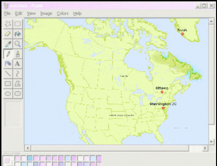
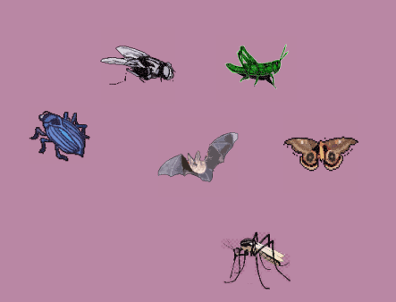

FACTSHEET
click on each gif to learn more!
Range
The northern long-eared bat’s range includes much of the eastern and north central United States, and all Canadian provinces from the Atlantic Ocean west to the southern Yukon Territory and eastern British Columbia. The species’ range includes the following 37 States and the District of Columbia: Alabama, Arkansas, Connecticut, Delaware, Georgia, Illinois, Indiana, Iowa, Kansas, Kentucky, Louisiana, Maine, Maryland, Massachusetts, Michigan, Minnesota, Mississippi, Missouri, Montana, Nebraska, New Hampshire, New Jersey, New York, North Carolina, North Dakota, Ohio, Oklahoma, Pennsylvania, Rhode Island, South Carolina, South Dakota, Tennessee, Vermont, Virginia, West Virginia, Wisconsin, and Wyoming.
Hide content again
Appearance

The northern long-eared bat is a medium-sized bat with a body length of 3 to 3.7 inches but a wingspan of 9 to 10 inches. Their fur color can be medium to dark brown on the back and tawny to pale-brown on the underside. As its name suggests, this bat is distinguished by its long ears, particularly as compared to other bats in its genus, Myotis.
Hide content again
Feeding Habits:
 Like most bats, northern long-eared bats emerge at dusk to feed. They primarily fly through the understory of forested areas feeding on moths, flies, leafhoppers, caddisflies, and beetles, which they catch while in flight using echolocation or by gleaning motionless insects from vegetation.
Hide content again NEXT
NEXT